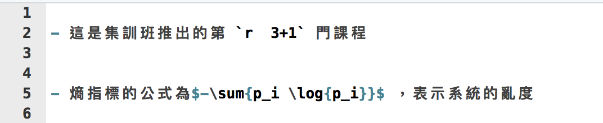

- 建立 R 的使用環境
- 熟悉 R 語言基礎操作
- 敘述句、數列
- 查詢說明檔
- 了解 R 語言的物件的結構
- 變數型態：logical、numeric、character、factor
- 資料存放容器：list、data.frame
2018/10/16
複習第一週
複習第二週
- R 語言的流程控制
- if、else
- for loop
- 自訂 function
- R 語言的資料整理
- 讀檔
- dplyr
- R 語言的資料爬析概念
複習第三週
- 資料視覺化（ggplot2）
- 基本語法
- 各式圖形畫法
- 參數調整
資料分析流程
- 資料採集
- 資料清洗處理
- 統計及分析
- 視覺呈現
報告產出
資料分析 in R

https://www.coursera.org/course/repdata
What is Markdown？
- 啟發自2004年純文字電子郵件
- 好寫、好讀
- 可以純文字發布
- Markdown
- Light weight markup language
- Remove HTML tag for higher readibility.
- Inline HTML is avaliable.
- HTML5 Introduction (w3schools.com)
What is RMarkdown？
- 可以在 Markdown 內嵌 R code
- 一次呈現執行程式碼後的結果及文字說明
- 不用再把圖、表複製到其他文件編輯器中
- Rmd -> md -> html (docx, pdf)
Why we need R Markdown？
- 時間久了會忘記code的意思
- 要寫說明文件給同學、同事、教授、主管
- 教授很有想法，想嘗試新方法
(FK！又要重跑一份) - 老闆說要改流程
(MD!之前貼到簡報上的圖又要重貼一份)
- 專案報告要呈現，code改了，但是文件無法同時修改！
Why we need R Markdown？
- 製作reproducible的報告、投影片
- 想寫數學式子好展現自己的專業 \(e=mc^2\)
- 只有一份source code，不需要額外複製圖片到報告中
- 需求更改時，可以動態改變報告內容
- 增加資料分析演算法的可讀性
- IDE? RStudio提供支援
前置作業 - 安裝
- 最新版的RStudio已經包含R Markdown功能
- 你也可以透過以下指令安裝R Markdown套件：
install.packages("rmarkdown")
R Markdown 快速導覽
打開你第一個RMarkdown
Document

Overview
Markdown

R Code Chunks

Inline R Code and Equations
- 利用 `r` 在markdown中插入R程式
- 插入 LaTeX 公式的方法：
- 行內
$ equation $ - 段落
$$ equation $$
- 行內
- for example :
- 這是DSP推出的第 4 門課程
- 熵指標的公式為\(-\sum{p_i \log{p_i}}\) ，表示系統的亂度
- markdown 公式輸入參考

Rendering Output
- RStudio: “Knit” command (Ctrl+Shift+K)
- Command line: rmarkdown::render function
rmarkdown::render("input.Rmd")
Markdown Basics
Markdown Quick Reference
在RStudio中，也可以找到RMarkdown的作弊小文件！

標題！
Headers
- 字體大小：使用井字號
# Header 1## Header 2### Header 3#### Header 4##### Header 5###### Header 6
字體！
- 我是正常文字
- 粗體：使用
**bold**或__bold__ - 斜體：使用
*italics*或_italics_ - 刪除線：使用
~~我是豬~~
結果：
- 我是正常文字
- 粗體：bold
- 斜體：italics
- 刪除線：
我是豬